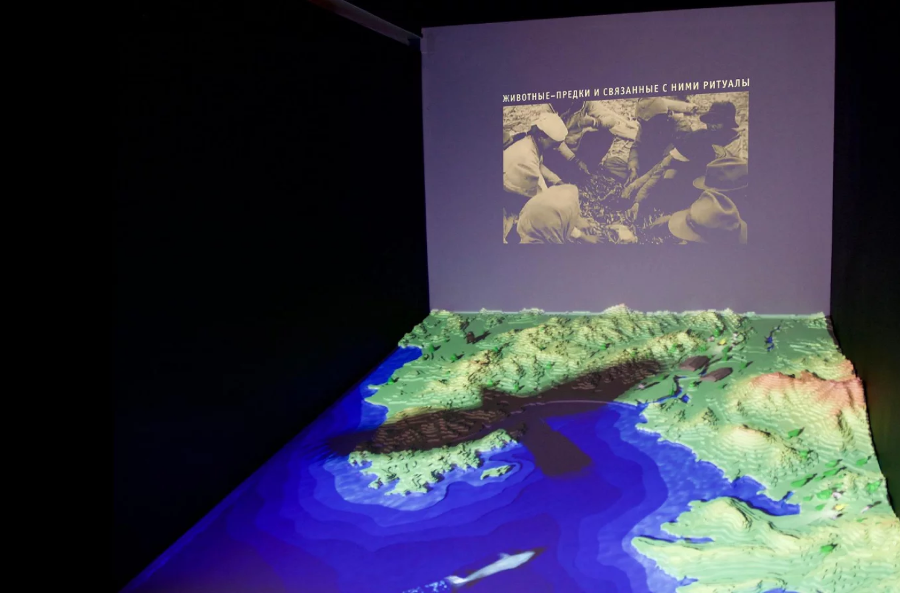

постоянная историческая экспозиция
начало экскурсий 10:00, 12:00, 14:00, 16:00
города по имени Находка
начало экскурсий 10:00, 12:00, 14:00, 16:00
С гордостью представляем вам первые залы исторической экспозиции о Находке.
На протяжении 1,5 лет проводилась большая исследовательская работа,
в которой приняли участие местные жители, общественные организации,
научное сообщество Приморского края!
В экспозиции впервые представлены материалы из фондов музеев и архивов
Владивостока, Хабаровска, Москвы, Красногорска, Японии.
Гений места», организованного Российским фондом культуры при поддержке
администрации Находкинского городского округа и партнерского совета музея.
Оригинальная подача, необычная концепция, современное мультимедиа оборудование
– таковы основы, на которых сформирована действующая экспозиция.
Новое явление в культурной жизни города курировали специалисты в области
музейного проектирования Ксения Филатова и Андрей Рымарь.
Разработчики стремились избежать стандартной схемы – хронологически
последовательной подачи информации от палеолита до современности.
Зал имеет кольцевую композицию. Осмотрев все залы, вы можете вернуться
к началу, чтобы открыть для себя новые связи, пронизывающие историю.
Способы коммуникации с материалом могут быть самыми разными: охват
картины целиком, или, наоборот, погружение в детали.
А можно изучать историю постепенно, ограниваясь какой-то определенной
темой, идущей сквозь всю экспозицию.

На протяжении 1,5 лет проводилась большая исследовательская работа,
в которой приняли участие местные жители, общественные организации,
научное сообщество Приморского края!
В экспозиции впервые представлены материалы из фондов музеев и архивов
Владивостока, Хабаровска, Москвы, Красногорска, Японии.

Проект реализуется в рамках Всероссийского конкурса «Новое краеведение. Гений места», организованного Российским фондом культуры при поддержке
администрации Находкинского городского округа и партнерского совета музея.
Оригинальная подача, необычная концепция, современное мультимедиа оборудование
– таковы основы, на которых сформирована действующая экспозиция.
Новое явление в культурной жизни города курировали специалисты в области
музейного проектирования Ксения Филатова и Андрей Рымарь.
Разработчики стремились избежать стандартной схемы – хронологически
последовательной подачи информации от палеолита до современности.
Зал имеет кольцевую композицию. Осмотрев все залы, вы можете вернуться
к началу, чтобы открыть для себя новые связи, пронизывающие историю.
Способы коммуникации с материалом могут быть самыми разными: охват
картины целиком, или, наоборот, погружение в детали.
А можно изучать историю постепенно, ограниваясь какой-то определенной
темой, идущей сквозь всю экспозицию.
Запишитесь прямо сейчас!
С 10:00 до 17:30 свяжитесь с нами по телефону: